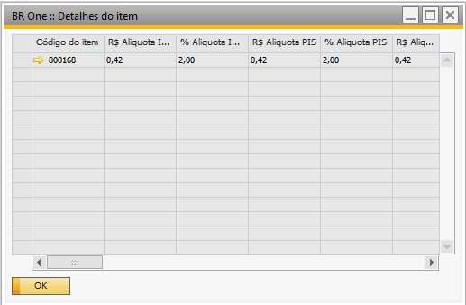
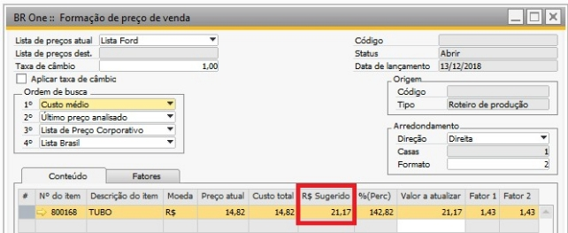
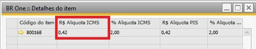
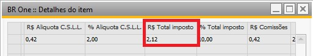
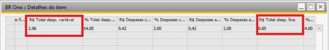
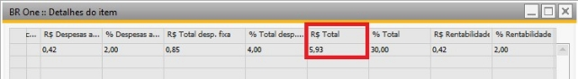
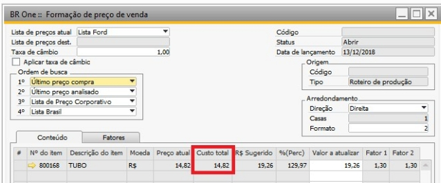
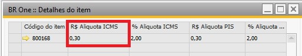
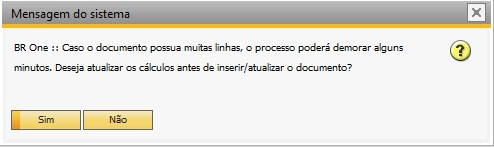
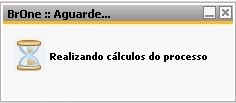

Operações - Detalhes itens
Através do botão Operações -> Detalhes itens é mostrado um formulário com valores das calculados das linhas selecionadas.
{kind=link}
Para calcular esses valores, será considerado o Tipo de cálculo na tela Config. Simulador de resultado.
Se o tipo for Margem, para calcular os impostos, despesas variáveis e despesas fixas, será considerada a coluna R$ Sugerido * imposto ou despesa / 100. E a coluna R$ Total será a soma das colunas R$ Total imposto, R$ Total desp. Variável e R$ Total desp. Fixa.
Exemplo: Na imagem abaixo, o R$ Sugerido é 21,17 e a Aliq. ICMS é 2.
{kind=link}
O valor da coluna R$ Aliquota ICMS será (21,17 * 2) / 100 = 0,4234.
{kind=link}
O valor da coluna R$ Total será 2,12 + 2,96 + 0,85 = 5,93.
  {kind=link}
{kind=link}
{kind=link}
Se o tipo for Mark-up, para calcular os impostos, despesas variáveis e despesas fixas, será considerada a coluna Custo total * imposto ou despesa / 100. E a coluna R$ Total será calculada da mesma forma do tipo Margem.
Exemplo: Na imagem abaixo, o Custo total é 14,82 e a Aliq. ICMS é 2.
{kind=link}
O valor da coluna R$ Alíquota ICMS será (14,82 * 2) / 100 = 0,30.
{kind=link}
Ao clicar em A*dicionar*, a seguinte mensagem será exibida, perguntando se o usuário deseja atualizar os cálculos antes de inserir/atualizar:
{kind=link}
BR One :: Caso o documento possua muitas linhas, o processo poderá demorar alguns minutos. Deseja atualizar os cálculos antes de inserir/atualizar o documento?
Ao clicar em Sim, assim como na opção Calcular, as seguintes mensagens serão exibidas:
{kind=link}
Realizando cálculos do processo
{kind=link}
BR One :: Realizando cálculos do processo. Linha [x] de [x]. Aguarde…